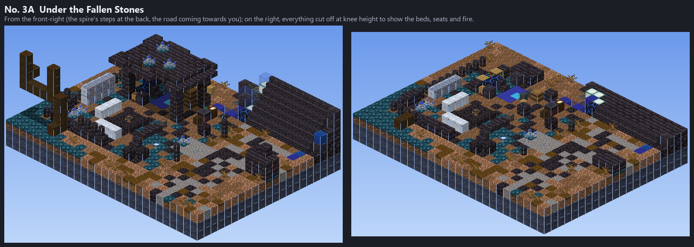
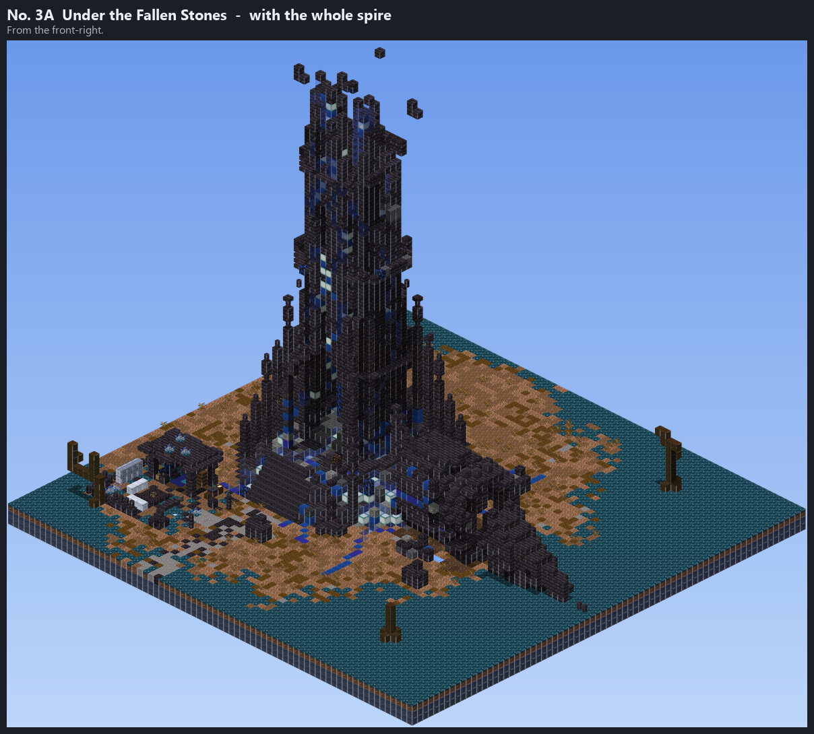

At the foot of the Shattered Spire's front steps (the Dross hub). The Blind Oracle (the master) and the Ragged Seeker (his student) live here. The user's pick: No. 3A of the five versions of No. 3 (round 2), built at the real hub; the three drafts are in round 1.
The draft, worked up: a slab of the spire's broken crown on four broken pillars beside the steps, behind a windbreak of fallen masonry, grown over with Silvermoss. The Oracle sits facing the road by a humming shard of a Dross frame, among books and candles, a lectern for his tome; the Seeker sleeps among his crates, his map table, smithing table and grindstone outside. A blue soul fire with benches and a stew pot in front.

